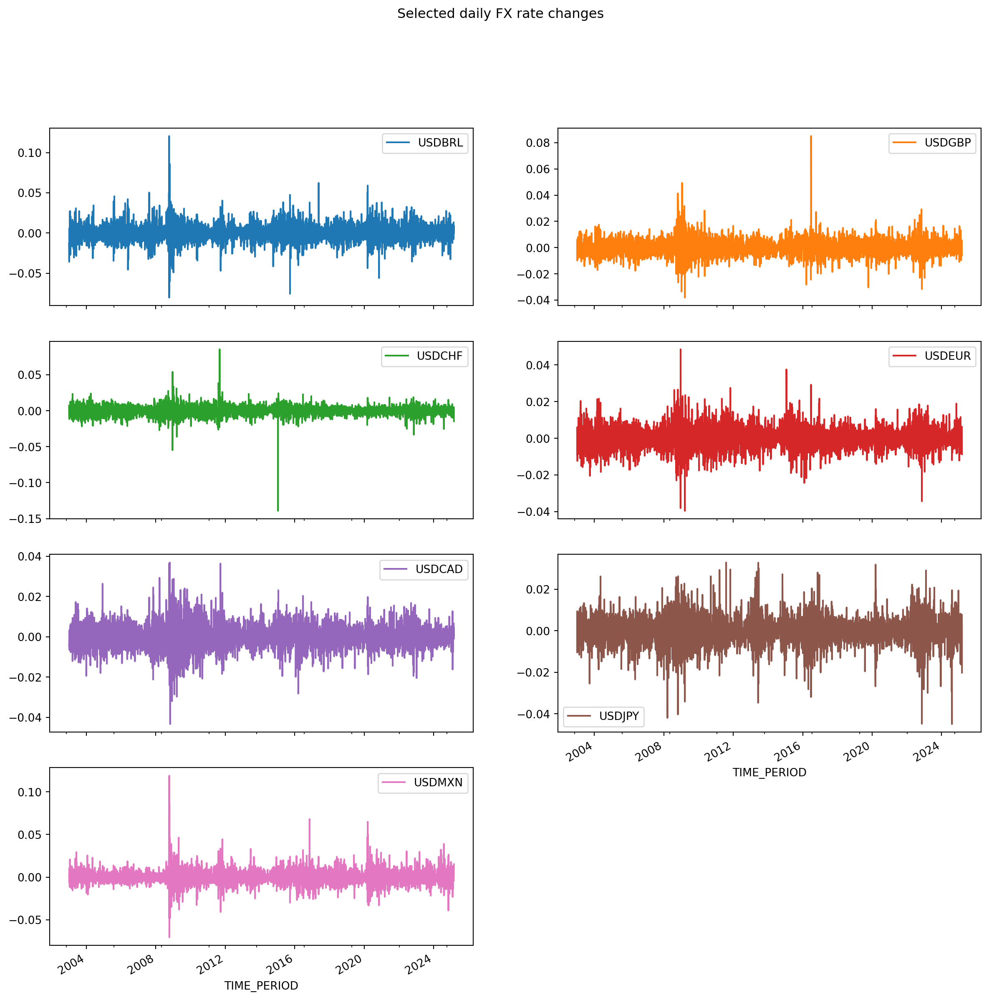

Code
from gingado.utils import load_SDMX_dataDouglas K. G. Araujo
This notebook illustrates the use of gingado to build models for forecasting, using foreign exchange (FX) rate movements as an example. Please note that the results or the model should not be taken as investment advice.
Forecasting exchange rates is notoriously difficult (Rossi (2013) and references therein).
This exercise will illustrate various functionalities provided by gingado:
how to use gingado utilities, such as an object to compare different lags of the model and a function that downloads specific SDMX data.
how to augment the original dataset of interest
how to quickly create a benchmark model, and use it compare different alternatives
how to document the model
Unlike most scripts that concentrate the package imports at the beginning, this walkthrough will import as needed, to better highlight where each contribution of gingado is used in the workflow.
First, we will use gingado to run a simple example with the following characteristics:
selected currency pairs will be downloaded from the European Central Bank (ECB) servers using the SDMX protocol
using gingado, this series will be augmented with a time series on central bank policy rates and the interaction of rate changes and FX rate movements
the regressors (including the FX rates themselves) are lagged up to 10 lags using the gingado utility Lag
a different benchmark model is created for each of the FX rates, using a random forest
gingado will automatically search for the best specification for each currency pair from a default list of hyperparametersthroughout the example, ModelCard is used to document the models being trained
In this exercise, we will concentrate on the bilateral FX rates between the 🇺🇸 US Dollar (USD) and the 🇧🇷 Brazilian Real (BRL), 🇨🇦 Canadian Dollar (CAD), 🇨🇭 Swiss Franc (CHF), 🇪🇺 Euro (EUR), 🇬🇧 British Pound (GBP), 🇯🇵 Japanese Yen (JPY) and 🇲🇽 Mexican Peso (MXN).
The rates are standardised to measure the units in foreign currency bought by one USD. Therefore, positive returns represent USD is more valued compared to the other currency, and vice-versa.
Querying data from BIS's dataflow 'WS_XRU' - US dollar exchange rates, m,q,a...
this dataflow does not have data in the desired frequency and time period.
Querying data from BIS's dataflow 'WS_XRU_D' - US dollar exchange rates, daily...The code below simplifies the column names by removing the identification of the SDMX sources, dataflows and keys and replacing it with the usual code for the bilateral exchange rates.
Original column names:
Index(['BIS__WS_XRU_D_D__MX__MXN__A', 'BIS__WS_XRU_D_D__JP__JPY__A',
'BIS__WS_XRU_D_D__XM__EUR__A', 'BIS__WS_XRU_D_D__CH__CHF__A',
'BIS__WS_XRU_D_D__BR__BRL__A', 'BIS__WS_XRU_D_D__GB__GBP__A',
'BIS__WS_XRU_D_D__CA__CAD__A'],
dtype='object')
New column names:
Index(['USDMXN', 'USDJPY', 'USDEUR', 'USDCHF', 'USDBRL', 'USDGBP', 'USDCAD'], dtype='object')The dataset looks like this so far (most recent 5 rows displayed only):
| USDMXN | USDJPY | USDEUR | USDCHF | USDBRL | USDGBP | USDCAD | |
|---|---|---|---|---|---|---|---|
| TIME_PERIOD | |||||||
| 2024-02-13 | 17.073288 | 149.328268 | 0.926526 | 0.878440 | 4.953674 | 0.788455 | 1.344483 |
| 2024-02-14 | 17.134229 | 150.546066 | 0.933445 | 0.886120 | 4.953701 | 0.795837 | 1.354336 |
| 2024-02-15 | 17.086661 | 150.107046 | 0.930839 | 0.882807 | 4.970772 | 0.797124 | 1.354091 |
| 2024-02-16 | 17.044577 | 150.334324 | 0.928678 | 0.881408 | 4.973161 | 0.794994 | 1.348254 |
| 2024-02-19 | 17.046956 | 149.953601 | 0.927988 | 0.880846 | 4.958519 | 0.792947 | 1.347624 |
We are interested in the percentage change from the previous day.
array([[<Axes: xlabel='TIME_PERIOD'>, <Axes: xlabel='TIME_PERIOD'>],
[<Axes: xlabel='TIME_PERIOD'>, <Axes: xlabel='TIME_PERIOD'>],
[<Axes: xlabel='TIME_PERIOD'>, <Axes: xlabel='TIME_PERIOD'>],
[<Axes: xlabel='TIME_PERIOD'>, <Axes: xlabel='TIME_PERIOD'>]],
dtype=object)
We will complement the FX rates data with two other datasets:
daily central bank policy rates from the Bank for International Settlements (BIS) (2017), and
the daily Composite Indicator of Systemic Stress (CISS), created by Hollo, Kremer, and Lo Duca (2012) and updated by the European Central Bank (ECB).
Querying data from BIS's dataflow 'WS_CBPOL_D' - Policy rates daily...
Querying data from ECB's dataflow 'CISS' - Composite Indicator of Systemic Stress...it is acceptable in gingado to pass the variable of interest (the “y”, or in this case, FX_rate_changes) as the X argument in fit_transform. This is because this series will also be merged with the additional, augmented data and subsequently lagged along with it.
You can see below that the column names for the newly added columns reflect the source (BIS or ECB), the dataflow (separated from the source by a double underline), and then the specific keys to the series, which are specific to each dataflow.
Index(['USDMXN', 'USDJPY', 'USDEUR', 'USDCHF', 'USDBRL', 'USDGBP', 'USDCAD',
'BIS__WS_CBPOL_D_D__CH', 'BIS__WS_CBPOL_D_D__CL',
'BIS__WS_CBPOL_D_D__CN', 'BIS__WS_CBPOL_D_D__CO',
'BIS__WS_CBPOL_D_D__CZ', 'BIS__WS_CBPOL_D_D__DK',
'BIS__WS_CBPOL_D_D__GB', 'BIS__WS_CBPOL_D_D__HK',
'BIS__WS_CBPOL_D_D__HR', 'BIS__WS_CBPOL_D_D__HU',
'BIS__WS_CBPOL_D_D__ID', 'BIS__WS_CBPOL_D_D__IL',
'BIS__WS_CBPOL_D_D__IN', 'BIS__WS_CBPOL_D_D__IS',
'BIS__WS_CBPOL_D_D__JP', 'BIS__WS_CBPOL_D_D__AR',
'BIS__WS_CBPOL_D_D__KR', 'BIS__WS_CBPOL_D_D__MA',
'BIS__WS_CBPOL_D_D__MK', 'BIS__WS_CBPOL_D_D__MX',
'BIS__WS_CBPOL_D_D__BR', 'BIS__WS_CBPOL_D_D__MY',
'BIS__WS_CBPOL_D_D__NO', 'BIS__WS_CBPOL_D_D__NZ',
'BIS__WS_CBPOL_D_D__PE', 'BIS__WS_CBPOL_D_D__PH',
'BIS__WS_CBPOL_D_D__CA', 'BIS__WS_CBPOL_D_D__PL',
'BIS__WS_CBPOL_D_D__AU', 'BIS__WS_CBPOL_D_D__RO',
'BIS__WS_CBPOL_D_D__RS', 'BIS__WS_CBPOL_D_D__RU',
'BIS__WS_CBPOL_D_D__SA', 'BIS__WS_CBPOL_D_D__SE',
'BIS__WS_CBPOL_D_D__TH', 'BIS__WS_CBPOL_D_D__TR',
'BIS__WS_CBPOL_D_D__US', 'BIS__WS_CBPOL_D_D__XM',
'BIS__WS_CBPOL_D_D__ZA', 'ECB__CISS_D__AT__Z0Z__4F__EC__SS_CIN__IDX',
'ECB__CISS_D__BE__Z0Z__4F__EC__SS_CIN__IDX',
'ECB__CISS_D__CN__Z0Z__4F__EC__SS_CIN__IDX',
'ECB__CISS_D__DE__Z0Z__4F__EC__SS_CIN__IDX',
'ECB__CISS_D__ES__Z0Z__4F__EC__SS_CIN__IDX',
'ECB__CISS_D__FI__Z0Z__4F__EC__SS_CIN__IDX',
'ECB__CISS_D__FR__Z0Z__4F__EC__SS_CIN__IDX',
'ECB__CISS_D__GB__Z0Z__4F__EC__SS_CIN__IDX',
'ECB__CISS_D__IE__Z0Z__4F__EC__SS_CIN__IDX',
'ECB__CISS_D__IT__Z0Z__4F__EC__SS_CIN__IDX',
'ECB__CISS_D__NL__Z0Z__4F__EC__SS_CIN__IDX',
'ECB__CISS_D__PT__Z0Z__4F__EC__SS_CIN__IDX',
'ECB__CISS_D__U2__Z0Z__4F__EC__SS_BM__CON',
'ECB__CISS_D__U2__Z0Z__4F__EC__SS_CI__IDX',
'ECB__CISS_D__U2__Z0Z__4F__EC__SS_CIN__IDX',
'ECB__CISS_D__U2__Z0Z__4F__EC__SS_CO__CON',
'ECB__CISS_D__U2__Z0Z__4F__EC__SS_EM__CON',
'ECB__CISS_D__U2__Z0Z__4F__EC__SS_FI__CON',
'ECB__CISS_D__U2__Z0Z__4F__EC__SS_FX__CON',
'ECB__CISS_D__U2__Z0Z__4F__EC__SS_MM__CON',
'ECB__CISS_D__US__Z0Z__4F__EC__SS_CI__IDX',
'ECB__CISS_D__US__Z0Z__4F__EC__SS_CIN__IDX'],
dtype='object')Before proceeding, we also include a differentiated version of the central bank policy data. It will be sparse, since these changes occur infrequently for most central banks, but it can help the model uncover how FX rate changes respond to central bank policy changes.
This is how the data looks like now. Note that the names of the added columns reflect the source, dataflow and keys, all separated by underlines (the source is separated from the dataflow by two underlines at all cases). For example, the last key is the jurisdiction of the central bank.
We will keep all the newly added variables - even those that are from countries not in the currency list. This is because the model may uncover any relationship of interest between central bank policies from other countries and each particular currency pair.
| count | mean | std | min | 25% | 50% | 75% | max | |
|---|---|---|---|---|---|---|---|---|
| USDMXN | 5461.0 | 0.000124 | 0.008089 | -0.070532 | -0.003982 | -0.000213 | 0.003857 | 0.118877 |
| USDJPY | 5461.0 | 0.000061 | 0.006081 | -0.044831 | -0.003006 | 0.000151 | 0.003205 | 0.032901 |
| USDEUR | 5461.0 | 0.000011 | 0.005712 | -0.039574 | -0.003121 | 0.000000 | 0.003042 | 0.048493 |
| USDCHF | 5461.0 | -0.000063 | 0.006389 | -0.139149 | -0.003251 | 0.000011 | 0.003225 | 0.085326 |
| USDBRL | 5461.0 | 0.000117 | 0.010476 | -0.080226 | -0.005706 | -0.000047 | 0.005351 | 0.120503 |
| ... | ... | ... | ... | ... | ... | ... | ... | ... |
| BIS__WS_CBPOL_D_D__TH_diff | 5460.0 | 0.000137 | 0.033666 | -1.000000 | 0.000000 | 0.000000 | 0.000000 | 0.500000 |
| BIS__WS_CBPOL_D_D__TR_diff | 5460.0 | 0.000183 | 0.309450 | -4.250000 | 0.000000 | 0.000000 | 0.000000 | 8.500000 |
| BIS__WS_CBPOL_D_D__US_diff | 5460.0 | 0.000755 | 0.041192 | -1.000000 | 0.000000 | 0.000000 | 0.000000 | 0.750000 |
| BIS__WS_CBPOL_D_D__XM_diff | 5460.0 | 0.000321 | 0.031443 | -0.750000 | 0.000000 | 0.000000 | 0.000000 | 0.750000 |
| BIS__WS_CBPOL_D_D__ZA_diff | 5460.0 | -0.000962 | 0.062475 | -1.500000 | 0.000000 | 0.000000 | 0.000000 | 0.750000 |
107 rows × 8 columns
The policy rates for some central banks have less observations than the others, as seen above.
Because some data are missing, we will impute data for the missing dates, by simply propagating the last valid observation, and when that is not possible, replacing the missing information with a “0”.
Now is a good time to start the model documentation. For this, we can use the standard model card that already comes with gingado.
The goal is to facilitate economists who want to make model documentation a part of their normal workflow.
['model_details__developer',
'model_details__version',
'model_details__type',
'model_details__info',
'model_details__paper',
'model_details__citation',
'model_details__license',
'model_details__contact',
'intended_use__primary_uses',
'intended_use__primary_users',
'intended_use__out_of_scope',
'factors__relevant',
'factors__evaluation',
'metrics__performance_measures',
'metrics__thresholds',
'metrics__variation_approaches',
'evaluation_data__datasets',
'evaluation_data__motivation',
'evaluation_data__preprocessing',
'training_data__training_data',
'quant_analyses__unitary',
'quant_analyses__intersectional',
'ethical_considerations__sensitive_data',
'ethical_considerations__human_life',
'ethical_considerations__mitigations',
'ethical_considerations__risks_and_harms',
'ethical_considerations__use_cases',
'ethical_considerations__additional_information',
'caveats_recommendations__caveats',
'caveats_recommendations__recommendations']As an example, we can add the following information to the model:
model_doc.fill_info({
'intended_use': {
'primary_uses': 'These models are simplified toy models made to illustrate the use of gingado',
'out_of_scope': 'These models were not constructed for decision-making and as such their use as predictors in real life decisions is strongly discouraged and out of scope.'
},
'metrics': {
'performance_measures': 'Consistent with most papers reviewed by Rossi (2013), these models were evaluated by their root mean squared error.'
},
'ethical_considerations': {
'sensitive_data': 'These models were not trained with sensitive data.',
'human_life': 'The models do not involve the collection or use of individual-level data, and have no foreseen impact on human life.'
},
})This model will not include any contemporaneous variable. Therefore, all regresors must be lagged.
For illustration purposes, we use 5 lags in this exercise.
Now is a good opportunity to check by how much we have increased our regressor space:
Our dataset is now complete. Before using it to train the models, we hold out the most recent data to serve as our testing dataset, so we can compare our models with real out-of-sample information.
We can choose, say, 1st January 2022.
model_doc.fill_info({
'training_data':
{'training_data':
"""
The training data comprise time series obtained from official sources (BIS and ECB) on:
* foreign exchange rates
* central bank policy rates
* an estimated indicator for systemic stress
The training and evaluation datasets are the same time series, only different windows in time."""
}
})The current status of the documentation is:
model_details {'developer': 'Person or organisation developi...
intended_use {'primary_uses': 'These models are simplified ...
factors {'relevant': 'Relevant factors', 'evaluation':...
metrics {'performance_measures': 'Consistent with most...
evaluation_data {'datasets': 'Datasets', 'motivation': 'Motiva...
training_data {'training_data': '
The training data ...
quant_analyses {'unitary': 'Unitary results', 'intersectional...
ethical_considerations {'sensitive_data': 'These models were not trai...
caveats_recommendations {'caveats': 'For example, did the results sugg...
dtype: objectRossi (2013) highlights that few predictors beat the random walk without drift model. This is a good opportunity to showcase how we can use gingado’s in-built base class ggdBenchmark to build our customised benchmark model, in this case a random walk.
The calculation of the random walk benchmark is very simple. Still, creating a gingado benchmark offers some advantages: it is easier to compare alternative models, and the model documentation is done more seamlessly.
A custom benchmark model must implement the following steps:
sub-class ggdBenchmark (or alternatively implement its methods)
define an estimator that is compatible with scikit-learn’s API:
fit method that returns selfIf the user is relying on a custom estimator - like in this case, a random walk estimator to align with the literature - then this custom estimator also has some requirements:
it should ideally subclass scikit-learn’s BaseEstimator (mostly for the get_params / set_params methods)
three methods are necessary:
fit, which should at least create an attribute ending in an underline (“_“), so that gingado knows it is fittedpredictscoreclass RandomWalkEstimator(BaseEstimator):
def __init__(self, scoring='neg_root_mean_squared_error'):
self.scoring = scoring
def fit(self, X, y=None):
self.n_samples_ = X.shape[0]
return self
def predict(self, X):
return np.zeros(X.shape[0])
def score(self, X, y, sample_weight=None):
from sklearn.metrics import mean_squared_error
y_pred = self.predict(X)
return mean_squared_error(y, y_pred, sample_weight=sample_weight, squared=False)
def forecast(self, forecast_horizon=1):
self.forecast_horizon = forecast_horizon
return np.zeros(self.forecast_horizon)
class RandomWalkBenchmark(ggdBenchmark):
def __init__(
self,
estimator=RandomWalkEstimator(),
auto_document=ModelCard,
cv=TimeSeriesSplit(n_splits=10, test_size=60),
ensemble_method=VotingRegressor,
verbose_grid=None):
self.estimator=estimator
self.auto_document=auto_document
self.cv=cv
self.ensemble_method=ensemble_method
self.verbose_grid=verbose_grid
def fit(self, X, y=None):
self.benchmark=self.estimator
self.benchmark.fit(X, y)
return selfNow that we have a benchmark, we can create candidate models that will try to beat it.
In this simplified example, we will choose only two: a random forest, an AdaBoost regressor and a Lasso model. Their hyperparameters are not particularly important for the example, but of course they could be fine-tuned as well.
In the language of Rossi (2013), the models below are one “single-equation, lagged fundamental model” for each currency.
We can now compare the model results, using the test dataset we held out previously.
Note that we must pass the criterion against which we are comparing the forecasts.
RandomWalkEstimator() 0.000109
RandomForestRegressor(max_features='log2', n_estimators=250) 0.000113
AdaBoostRegressor(n_estimators=150) 0.000112
Lasso(alpha=0.1) 0.000109
dtype: float64As mentioned above, benchmarks can facilitate the model documentation. In addition to the broader documentation that is already ongoing, each benchmark object create their own where they store model information. We can use that for the broader documentation.
In our case, the only parameter we created above during fit is the number of samples: not a particularly informative variable but it was included just for illustration purposes. In any case, the parameter appears in the “model_details” section, item “info”, of the benchmark’s rw documentation. Similarly, the parameters of more fully-fledged estimators also appear in that section.
{'model_details': {'developer': 'Person or organisation developing the model',
'datetime': '2024-02-27 09:09:35 ',
'version': 'Model version',
'type': 'Model type',
'info': {'n_samples_': 4394},
'paper': 'Paper or other resource for more information',
'citation': 'Citation details',
'license': 'License',
'contact': 'Where to send questions or comments about the model'},
'intended_use': {'primary_uses': 'These models are simplified toy models made to illustrate the use of gingado',
'primary_users': 'Primary intended users',
'out_of_scope': 'These models were not constructed for decision-making and as such their use as predictors in real life decisions is strongly discouraged and out of scope.'},
'factors': {'relevant': 'Relevant factors',
'evaluation': 'Evaluation factors'},
'metrics': {'performance_measures': 'Consistent with most papers reviewed by Rossi (2013), these models were evaluated by their root mean squared error.',
'thresholds': 'Decision thresholds',
'variation_approaches': 'Variation approaches'},
'evaluation_data': {'datasets': 'Datasets',
'motivation': 'Motivation',
'preprocessing': 'Preprocessing'},
'training_data': {'training_data': '\n The training data comprise time series obtained from official sources (BIS and ECB) on:\n * foreign exchange rates\n * central bank policy rates\n * an estimated indicator for systemic stress\n The training and evaluation datasets are the same time series, only different windows in time.'},
'quant_analyses': {'unitary': 'Unitary results',
'intersectional': 'Intersectional results'},
'ethical_considerations': {'sensitive_data': 'These models were not trained with sensitive data.',
'human_life': 'The models do not involve the collection or use of individual-level data, and have no foreseen impact on human life.',
'mitigations': 'What risk mitigation strategies were used during model development?',
'risks_and_harms': 'What risks may be present in model usage? Try to identify the potential recipients,likelihood, and magnitude of harms. If these cannot be determined, note that they were considered but remain unknown',
'use_cases': 'Are there any known model use cases that are especially fraught?',
'additional_information': 'If possible, this section should also include any additional ethical considerations that went into model development, for example, review by an external board, or testing with a specific community.'},
'caveats_recommendations': {'caveats': 'For example, did the results suggest any further testing? Were there any relevant groups that were not represented in the evaluation dataset?',
'recommendations': 'Are there additional recommendations for model use? What are the ideal characteristics of an evaluation dataset for this model?'}}We can save the documentation to disk in JSON format with model_doc.save_json(), or parse it to create other documents (eg, a PDF file) using third-party libraries.
---
title: Using gingado to forecast financial series
description: A beginning-to-end illustration with foreign exchange rates inspired by @rossi2013exchange
output-file: forecast.html
author: Douglas K. G. Araujo
code-fold: show
code-tools: true
jupyter: python3
warning: false
---
This notebook illustrates the use of `gingado` to build models for forecasting, using foreign exchange (FX) rate movements as an example. Please note that the results or the model should not be taken as investment advice.
Forecasting exchange rates is notoriously difficult (@rossi2013exchange and references therein).
This exercise will illustrate various functionalities provided by `gingado`:
* how to use `gingado` utilities, such as an object to compare different lags of the model and a function that downloads specific SDMX data.
* how to augment the original dataset of interest
* how to quickly create a benchmark model, and use it compare different alternatives
* how to document the model
Unlike most scripts that concentrate the package imports at the beginning, this walkthrough will import as needed, to better highlight where each contribution of `gingado` is used in the workflow.
First, we will use `gingado` to run a simple example with the following characteristics:
* selected currency pairs will be downloaded from the European Central Bank (ECB) servers using the [SDMX](www.sdmx.org) protocol
* these pairs will form our dependent variables in the models
* using `gingado`, this series will be augmented with a time series on central bank policy rates and the interaction of rate changes and FX rate movements
* the regressors (including the FX rates themselves) are lagged up to 10 lags using the `gingado` utility `Lag`
* a different benchmark model is created for each of the FX rates, using a random forest
* `gingado` will automatically search for the best specification for each currency pair from a default list of hyperparameters
* throughout the example, `ModelCard` is used to document the models being trained
## Downloading FX rates
In this exercise, we will concentrate on the bilateral FX rates between the 🇺🇸 US Dollar (USD) and the 🇧🇷 Brazilian Real (BRL), 🇨🇦 Canadian Dollar (CAD), 🇨🇭 Swiss Franc (CHF), 🇪🇺 Euro (EUR), 🇬🇧 British Pound (GBP), 🇯🇵 Japanese Yen (JPY) and 🇲🇽 Mexican Peso (MXN).
The rates are standardised to measure the units in foreign currency bought by one USD. Therefore, positive returns represent USD is more valued compared to the other currency, and vice-versa.
```{python}
from gingado.utils import load_SDMX_data
```
```{python}
df = load_SDMX_data(
sources={'BIS': 'WS_XRU_D'},
keys={
'FREQ': 'D',
'CURRENCY': ['BRL', 'CAD', 'CHF', 'EUR', 'GBP', 'JPY', 'MXN'],
'REF_AREA': ['BR', 'CA', 'CH', 'XM', 'GB', 'JP', 'MX']
},
params={'startPeriod': 2003}
)
```
The code below simplifies the column names by removing the identification of the SDMX sources, dataflows and keys and replacing it with the usual code for the bilateral exchange rates.
```{python}
print("Original column names:")
print(df.columns)
df.columns = ['USD' + col.split('_')[9] for col in df.columns]
print("New column names:")
print(df.columns)
```
The dataset looks like this so far (most recent 5 rows displayed only):
```{python}
df.tail()
```
We are interested in the percentage change from the previous day.
```{python}
FX_rate_changes = df.pct_change()
FX_rate_changes.dropna(inplace=True)
```
```{python}
FX_rate_changes.plot(subplots=True, layout=(4, 2), figsize=(15, 15), sharex=True, title='Selected daily FX rate changes')
```
## Augmenting the dataset
We will complement the FX rates data with two other datasets:
* daily central bank policy rates from the Bank for International Settlements (BIS) [-@BISstatQR2017], and
* the daily Composite Indicator of Systemic Stress (CISS), created by @hollo2012ciss and updated by the European Central Bank (ECB).
```{python}
from gingado.augmentation import AugmentSDMX
```
```{python}
X = AugmentSDMX(sources={'BIS': 'WS_CBPOL_D', 'ECB': 'CISS'}).fit_transform(FX_rate_changes)
```
:::{.callout-note}
it is acceptable in `gingado` to pass the variable of interest (the "y", or in this case, `FX_rate_changes`) as the `X` argument in `fit_transform`. This is because this series will also be merged with the additional, augmented data and subsequently lagged along with it.
:::
You can see below that the column names for the newly added columns reflect the source (BIS or ECB), the dataflow (separated from the source by a double underline), and then the specific keys to the series, which are specific to each dataflow.
```{python}
X.columns
```
Before proceeding, we also include a differentiated version of the central bank policy data. It will be sparse, since these changes occur infrequently for most central banks, but it can help the model uncover how FX rate changes respond to central bank policy changes.
```{python}
import pandas as pd
```
```{python}
X_diff = X.loc[:, X.columns.str.contains("BIS__WS_CBPOL_D", case=False)].diff()
X_diff.columns = [col + "_diff" for col in X_diff.columns]
X = pd.concat([X, X_diff], axis=1)
```
This is how the data looks like now. Note that the names of the added columns reflect the source, dataflow and keys, all separated by underlines (the source is separated from the dataflow by two underlines at all cases). For example, the last key is the jurisdiction of the central bank.
We will keep all the newly added variables - even those that are from countries not in the currency list. This is because the model may uncover any relationship of interest between central bank policies from other countries and each particular currency pair.
```{python}
X.describe().transpose()
```
The policy rates for some central banks have less observations than the others, as seen above.
Because some data are missing, we will impute data for the missing dates, by simply propagating the last valid observation, and when that is not possible, replacing the missing information with a "0".
```{python}
X.fillna(method='pad', inplace=True)
X.fillna(value=0, inplace=True)
```
Now is a good time to start the model documentation. For this, we can use the standard model card that already comes with `gingado`.
The goal is to facilitate economists who want to make model documentation a part of their normal workflow.
```{python}
from gingado.model_documentation import ModelCard
```
```{python}
model_doc = ModelCard()
model_doc.open_questions()
```
As an example, we can add the following information to the model:
```{python}
model_doc.fill_info({
'intended_use': {
'primary_uses': 'These models are simplified toy models made to illustrate the use of gingado',
'out_of_scope': 'These models were not constructed for decision-making and as such their use as predictors in real life decisions is strongly discouraged and out of scope.'
},
'metrics': {
'performance_measures': 'Consistent with most papers reviewed by Rossi (2013), these models were evaluated by their root mean squared error.'
},
'ethical_considerations': {
'sensitive_data': 'These models were not trained with sensitive data.',
'human_life': 'The models do not involve the collection or use of individual-level data, and have no foreseen impact on human life.'
},
})
```
## Lagging the regressors
This model will not include any contemporaneous variable. Therefore, all regresors must be lagged.
For illustration purposes, we use 5 lags in this exercise.
```{python}
from gingado.utils import Lag
```
```{python}
n_lags = 5
X_lagged = Lag(lags=n_lags).fit_transform(X)
X_lagged
y = FX_rate_changes[n_lags:]
```
Now is a good opportunity to check by how much we have increased our regressor space:
```{python}
pd.Series({
"FX rates only": y.shape[1],
"... with augmentation_": X.shape[1],
"... lagged": X_lagged.shape[1]
})
```
## Training the models
Our dataset is now complete. Before using it to train the models, we hold out the most recent data to serve as our testing dataset, so we can compare our models with real out-of-sample information.
We can choose, say, 1st January 2022.
```{python}
cutoff = '2020-01-01'
X_train, X_test = X_lagged[:cutoff], X_lagged[cutoff:]
y_train, y_test = y[:cutoff], y[cutoff:]
```
```{python}
model_doc.fill_info({
'training_data':
{'training_data':
"""
The training data comprise time series obtained from official sources (BIS and ECB) on:
* foreign exchange rates
* central bank policy rates
* an estimated indicator for systemic stress
The training and evaluation datasets are the same time series, only different windows in time."""
}
})
```
The current status of the documentation is:
```{python}
pd.Series(model_doc.show_json())
```
### Creating a random walk benchmark
@rossi2013exchange highlights that few predictors beat the random walk without drift model. This is a good opportunity to showcase how we can use `gingado`'s in-built base class `ggdBenchmark` to build our customised benchmark model, in this case a random walk.
The calculation of the random walk benchmark is very simple. Still, creating a `gingado` benchmark offers some advantages: it is easier to compare alternative models, and the model documentation is done more seamlessly.
A custom benchmark model must implement the following steps:
* sub-class `ggdBenchmark` (or alternatively implement its methods)
* define an `estimator` that is compatible with `scikit-learn`'s API:
* at the very least, it has a `fit` method that returns `self`
If the user is relying on a custom estimator - like in this case, a random walk estimator to align with the literature - then this custom estimator also has some requirements:
* it should ideally subclass `scikit-learn`'s `BaseEstimator` (mostly for the `get_params` / `set_params` methods)
* three methods are necessary:
* `fit`, which should at least create an attribute ending in an underline ("_"), so that `gingado` knows it is fitted
* `predict`
* `score`
```{python}
import numpy as np
from gingado.benchmark import ggdBenchmark
from sklearn.base import BaseEstimator
from sklearn.ensemble import VotingRegressor
from sklearn.model_selection import TimeSeriesSplit
```
```{python}
class RandomWalkEstimator(BaseEstimator):
def __init__(self, scoring='neg_root_mean_squared_error'):
self.scoring = scoring
def fit(self, X, y=None):
self.n_samples_ = X.shape[0]
return self
def predict(self, X):
return np.zeros(X.shape[0])
def score(self, X, y, sample_weight=None):
from sklearn.metrics import mean_squared_error
y_pred = self.predict(X)
return mean_squared_error(y, y_pred, sample_weight=sample_weight, squared=False)
def forecast(self, forecast_horizon=1):
self.forecast_horizon = forecast_horizon
return np.zeros(self.forecast_horizon)
class RandomWalkBenchmark(ggdBenchmark):
def __init__(
self,
estimator=RandomWalkEstimator(),
auto_document=ModelCard,
cv=TimeSeriesSplit(n_splits=10, test_size=60),
ensemble_method=VotingRegressor,
verbose_grid=None):
self.estimator=estimator
self.auto_document=auto_document
self.cv=cv
self.ensemble_method=ensemble_method
self.verbose_grid=verbose_grid
def fit(self, X, y=None):
self.benchmark=self.estimator
self.benchmark.fit(X, y)
return self
```
### Training the candidate models
Now that we have a benchmark, we can create candidate models that will try to beat it.
In this simplified example, we will choose only two: a random forest, an AdaBoost regressor and a Lasso model. Their hyperparameters are not particularly important for the example, but of course they could be fine-tuned as well.
In the language of @rossi2013exchange, the models below are one *"single-equation, lagged fundamental model"* for each currency.
```{python}
from sklearn.ensemble import RandomForestRegressor
from sklearn.ensemble import AdaBoostRegressor
from sklearn.linear_model import Lasso
```
```{python}
forest = RandomForestRegressor(n_estimators=250, max_features='log2').fit(X_train, y_train['USDBRL'])
adaboost = AdaBoostRegressor(n_estimators=150).fit(X_train, y_train['USDBRL'])
lasso = Lasso(alpha=0.1).fit(X_train, y_train['USDBRL'])
rw = RandomWalkBenchmark().fit(X_train, y_train['USDBRL'])
```
We can now compare the model results, using the test dataset we held out previously.
Note that we must pass the criterion against which we are comparing the forecasts.
```{python}
from sklearn.metrics import mean_squared_error
```
```{python}
results = rw.compare_fitted_candidates(
X_test, y_test['USDBRL'],
candidates=[forest, adaboost, lasso],
scoring_func=mean_squared_error)
pd.Series(results)
```
As mentioned above, benchmarks can facilitate the model documentation. In addition to the broader documentation that is already ongoing, each benchmark object create their own where they store model information. We can use that for the broader documentation.
In our case, the only parameter we created above during fit is the number of samples: not a particularly informative variable but it was included just for illustration purposes. In any case, the parameter appears in the "model_details" section, item "info", of the benchmark's `rw` documentation. Similarly, the parameters of more fully-fledged estimators also appear in that section.
```{python}
rw.document()
rw.model_documentation.show_json()['model_details']['info']
```
```{python}
model_doc.fill_info({
'model_details': {'info': rw.model_documentation.show_json()['model_details']['info']}
})
```
```{python}
model_doc.show_json()
```
We can save the documentation to disk in JSON format with `model_doc.save_json()`, or parse it to create other documents (eg, a PDF file) using third-party libraries.
## References
::: {#refs}
:::